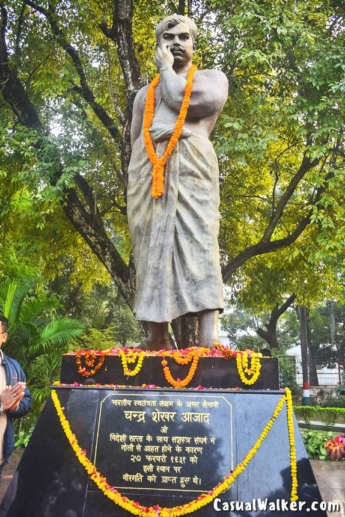
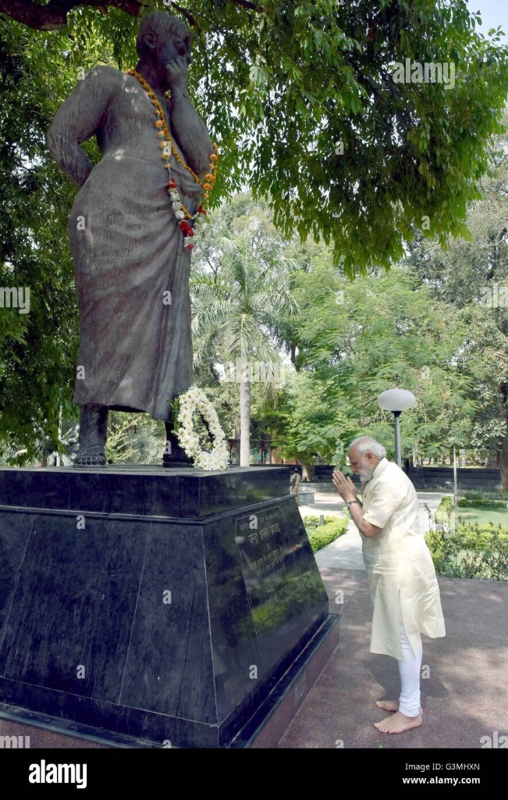
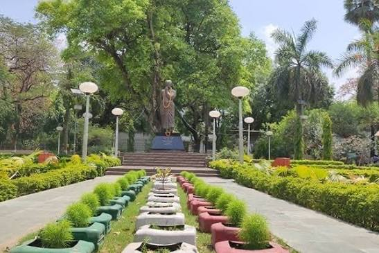
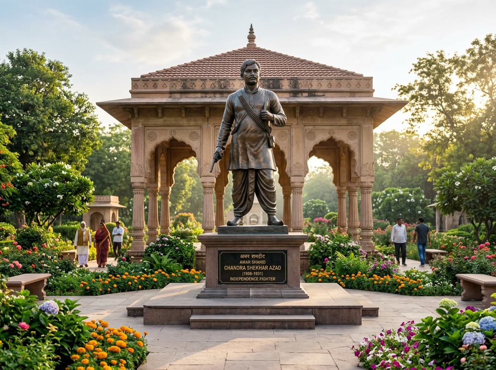
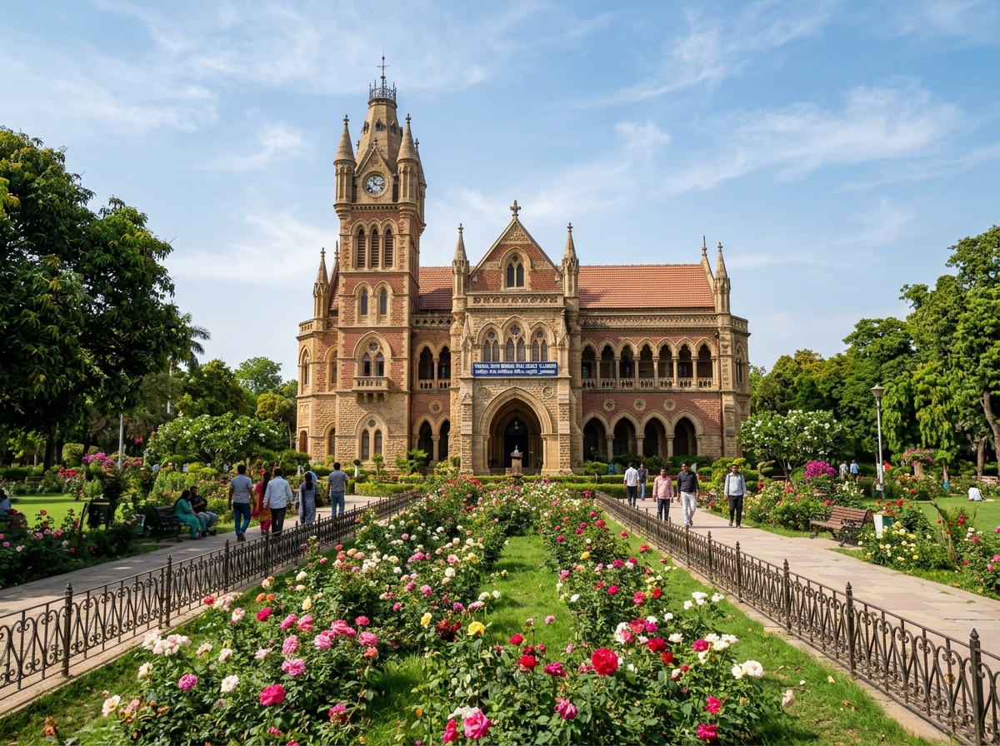
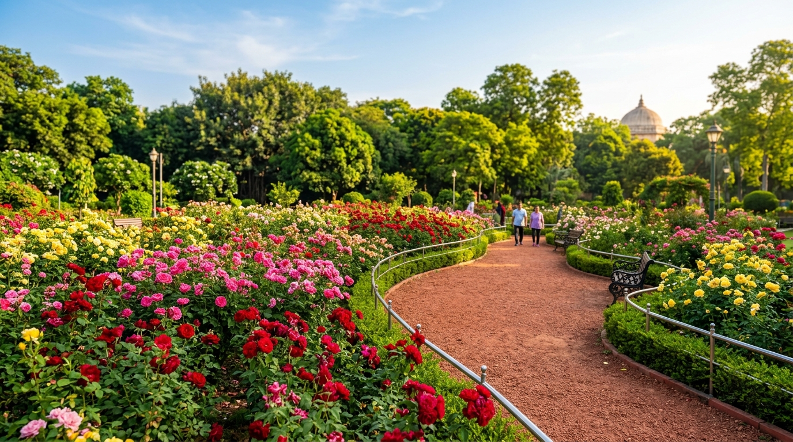
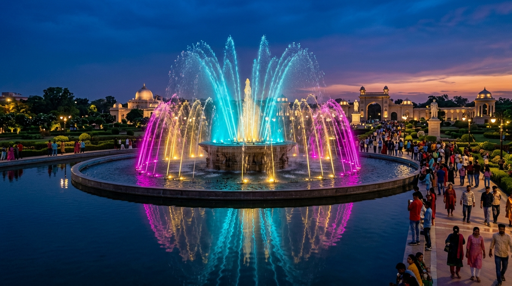

Amar Shaheed Memorial SanctuaryPrayagraj, Uttar Pradesh
Chandra Shekhar Azad Park
Spread across 133 majestic emerald acres, walk the historic soil where Chandra Shekhar Azad kept his sacred vow of freedom. Explore Victorian Gothic stone monuments, the world-renowned Allahabad Museum, rare botanical conservatories, and serene dawn jogging trails.
Illustrative layout — not to scale. Gate locations pending verification
Chandrashekhar Azad Memorial
अमर शहीद चंद्रशेखर आज़ाद स्मारक
The sacred memorial marks the site where revolutionary commander Chandra Shekhar Azad made his supreme sacrifice on February 27, 1931, during an armed encounter with British colonial police. A revered bronze statue and the sacred martyrdom site honor his immortal legacy inside the sanctuary.
Visiting Hours: Park open daily 05:00 AM – 09:00 PM (Details pending verification for specific enclosure)
Four designated access gates encircle the 133-acre perimeter, equipped with wheelchair ramps, dedicated parking zones, and electric buggy shuttles for visitors.
GATE 01 Kamla Nehru Road
Amar Shaheed Memorial Gate
अमर शहीद स्मारक द्वार (उत्तर)
Primary ceremonial entrance offering direct access to the Chandrashekhar Azad Bronze Statue, the sacred martyrdom Jamun tree, and the central boulevard.
Car Parking EV Buggy Terminal Wheelchair Ramp
GATE 02 Kutchery Road
Administrative & Helpdesk Gate
प्रशासनिक एवं सहायता केन्द्र द्वार (पूर्व)
The primary visitor services portal housing the central manual ticketing counter, official Lost & Found helpdesk, sanitised restrooms, and first-aid post.
Ticket Counter Buggy Shuttle Stand First Aid
GATE 03 Thornhill Road
Library & Museum Gateway
पुस्तकालय एवं संग्रहालय द्वार (पश्चिम)
Direct access point for researchers, students, and culture enthusiasts visiting Thornhill Mayne Public Library (1864) and the Allahabad National Museum galleries.
Library Access Museum Ramps Two-Wheeler Bay
GATE 04 Dayanand Marg
Civil Lines South Botanical Gate
सिविल लाइन्स वनस्पति उद्यान द्वार (दक्षिण)
Scenic southern entrance opening directly onto the 15-acre Heritage Rose Conservatory, dawn yoga assembly lawns, and the perimeter natural clay jogging track.
Jogging Track Rose Conservatory Cycle Stands

मूल प्रतिमा स्थल • Sacred Martyrdom Site
दुश्मनों की गोलियों का हम सामना करेंगे,
आज़ाद ही रहे हैं, आज़ाद ही रहेंगे!
— अमर शहीद चंद्रशेखर आज़ाद (२७ फ़रवरी १९३१)
पवित्र प्रतिमा एवं शिलालेखSacred Martyrdom Site & Inscription

राष्ट्रीय नमन • पुष्पांजलिHomage by Prime Minister

शहीद वाटिका मार्गGrand Promenade Avenue
Sacred Freedom Soil
The Immortal Stand of Alfred Park
On the morning of February 27, 1931, revolutionary commander Chandra Shekhar Azad met Sukhdev Raj in Alfred Park to coordinate future actions for the Hindustan Socialist Republican Association (HSRA). Betrayed to the British colonial police, the park was cordoned off by armed constables led by CID Chief J.R.H. Nott-Bower.
Taking cover behind an ancient jamun tree, Azad bravely returned fire with his famed Colt pistol, enabling Sukhdev to safely escape. Fighting single-handedly until his final bullet remained, Azad placed the muzzle to his own temple and pulled the trigger—immortalizing his vow that the British crown would never take him alive.
प्रतिमा पर अंकित मूल ऐतिहासिक शिलालेख
“भारतीय स्वतंत्रता संग्राम के अमर सेनानी चन्द्र शेखर आजाद
जो विदेशी सत्ता के साथ सशस्त्र संघर्ष में गोली से आहत होने के कारण २७ फ़रवरी १९३१ को इसी स्थान पर वीरगति को प्राप्त हुए थे।”
Official Heritage Audio Guide
Authentic History Voice Chronicle • Hindi & English
00:00 / 02:05
Real Historical Voice Narration
Alfred Park, 27 Feb 1931 High-definition voice
Click Play to listen to the authentic chronicle of Chandra Shekhar Azad’s legendary last stand at Alfred Park on 27 February 1931.
The Sacred Jamun Tree MemorialPreserved sanctuary where freedom seekers offer floral tributes daily.
Azad's Historic Colt PistolPreserved in the Central Gallery of the adjacent Allahabad Museum.
Visual Archives • चित्र वीथिका
Heritage Photo Gallery
Explore curated photographic glimpses of the sanctified memorial, Gothic colonial landmarks, rare botanical flora, and evening illumination at Azad Park.
Memorial
Sacred Martyrdom Bronze Statue
Original memorial statue erected at the martyrdom site where Azad made his supreme sacrifice.
Memorial
National Homage Pavilion
Daily floral tributes offered by citizens, dignitaries, and school students from across India.

Memorial
Memorial Column & Sanctorum
Sanctuary gardens surrounding the sacred Jamun tree and memorial pedestal.

Architecture
Thornhill Mayne Memorial Library
1878 Gothic revival sandstone library housing over 125,000 rare manuscripts and books.
Architecture
The Allahabad Museum
National Category-1 museum preserving Azad's historic Colt pistol and ancient artefacts.
Architecture
Italian Marble Canopy
1906 ornate white Carrara marble pavilion overlooking the manicured central fountain lawns.

Nature
Heritage Rose Conservatory
15-acre sprawling horticultural nursery blooming with over 350 indigenous and hybrid rose varieties.

Nature
Musical Laser Fountain
Synchronized water jets and patriotic illumination shows hosted every evening at the central lake.
Nature
Grand Tree Avenues & Walkways
Shaded mahogany and neem walking tracks providing clean air for thousands of morning runners.
Visitor Essentials • मार्गदर्शिका
Park Visitor Guide & Regulations
Everything you need to plan a respectful, enjoyable, and safe visit to North India's largest urban heritage park.
Morning Walkers
05:00 AM – 09:00 AM
Open every day, 365 days a year. Free entry for registered passholders.
General Public Hours
09:00 AM – 08:30 PM
Entry ticket or online QR e-pass required at all four gates.
Allahabad Museum
10:00 AM – 05:00 PM
Closed every Monday and on National Gazetted Holidays.
Valid for single entry to all gardens, memorials & fountain.
Children (Under 5 years)
FREE
Complimentary entry accompanied by an adult.
Monthly Morning Walker Pass
₹120
Valid 30 days during morning hours (5 AM – 9 AM).
Annual Morning Pass
₹1,000
365-day access with dedicated biometric gate lane.
EV Buggy Ride
₹20
Round-trip perimeter shuttle per person (free for disabled).
Strict Zero-Plastic Zone
Single-use plastic bags, bottles, and thermocol are strictly prohibited. Steel water refill stations are placed at each gate.
Photography & Drones
Personal mobile photography is free and encouraged. Commercial filming or drone flights require prior clearance from the District Magistrate.
Flora & Fauna Protection
Plucking flowers, disturbing bird sanctuaries, or littering invites a strict municipal penalty under Uttar Pradesh Municipal Act.
Tobacco & Alcohol Ban
Smoking, gutkha, paan, or alcohol consumption inside the sacred sanctuary is strictly prohibited and punishable by law.
Free Wheelchair Services
Standard manual wheelchairs available at Gate 1 (Kamla Nehru) and Gate 3 (Thornhill) against valid ID deposit.
Solar EV Buggies
8-seater quiet eco-buggies run circular routes every 15 minutes between all major monuments and gardens.
Ramp Access
Gentle slope ramps with handrails are provided at Azad Memorial Plaza, Allahabad Museum, and Thornhill Library.
Visitor Helpdesk
Assistance officers stationed at Central Control Office (near Gate 1). Helpline: +91 532 246 0123.
Freedom Trail • 1.8 km
Martyrdom & Memorial Circuit
Gate 1 → Sacred Jamun Tree → Azad Bronze Statue → Allahabad Museum Freedom Gallery → Gate 1. (Approx. 45 mins)
Botanical Loop • 2.4 km
Colonial Gardens & Rose Conservatory
Gate 4 → 15-Acre Rose Conservatory → Victoria Marble Canopy → Bonsai Nursery → Musical Lake. (Approx. 60 mins)
Perimeter Loop • 3.2 km
Morning Jogger Red-Clay Track
Full 133-acre perimeter jogging track cushioned with natural red clay and shaded by 100-year-old mahogany trees.
Connectivity & Routes • कैसे पहुँचें
How to Reach Azad Park
Centrally located in the heart of Prayagraj's Civil Lines & George Town districts, conveniently reachable from all major railway terminals, airports, and bus stations.
Prayagraj Junction (PRYJ)
3.0 km • 10-15 mins
Main railway terminal. Autos, app cabs (Ola/Uber), and e-rickshaws are available 24/7 directly via Kutchery Road to Gate 1 or Gate 2.
Official digital pass generator authorized by Prayagraj Municipal Corporation & Horticultural Board. Generate instant verified QR e-tickets on your phone.
General Day Entry Pass
₹15 / person
Full-day single entry access to all gardens, memorial plaza, jogging tracks, and evening musical fountain.
Most Popular
Monthly Morning Walker Pass
₹120 / month
Unlimited priority gate access (05:00 AM – 08:30 AM), access to open-air gym and designated yoga lawns.
Health Pass
Annual Privilege Walker Pass
₹1,000 / year
365 days unlimited dawn and dusk access, free EV buggy rides for seniors, and floral show VIP invitations.
Best Value
Heritage & Museum Combined Pass
₹50 / person
Complete entry to Azad Park + All 16 National Galleries of Allahabad Museum (Includes Azad's Colt Gallery).
Culture Combo
DSLR / Professional Photo Permit
₹100 / day
Permit for professional DSLR, pre-wedding, or documentary nature photography across botanical grounds.
Read reflections from daily morning walkers, historians, and pilgrims from across India.
Anonymous & Ground-Verified
How was your digital experience today?
Quick one-click pulse response • Help us preserve and elevate Chandra Shekhar Azad Park portal
Verified Visitor Pulse Active
0 / 280
Topic:
Thank you for your feedback!
Your response has been verified & recorded anonymously. Your reflections help maintain the dignity and quality of Chandra Shekhar Azad Park's digital visitor portal.
CHANDRA SHEKHAR AZAD PARK
Official Digital Entry E-Pass • Prayagraj
CONFIRMED & ACTIVE
Booking ReferenceAZAD-2026-89412
Primary VisitorAbhishek Sharma
Pass TypeGeneral Day Entry Pass
Date of Visit2026-09-18
Total Persons1 Person
Amount Paid₹15
Scan at Gate 1, 2, 3 or 4 turnstiles for fast entry.
Verify Official E-Pass
Enter the Booking Reference number or scan QR to check validity.
Share Your Visitor Experience
Your reflections help keep the sanctuary clean and vibrant.
Trending:
Type keywords to discover monuments, gates, timings, entry passes, and historical archives.
Memorial
Photo Title
Photo description text.
1 / 9
Gatekeeper & Supervisor Control Desk
Prayagraj Municipal Corporation • Turnstile Operations
Live Sync
1,482 Scans Today
820 Morning Walkers
146 EV Buggy Rides
99.4% Verified Passes
Instant Pass Verification
Recent Gate Activity
All Gates (1, 2, 3, 4)
AZAD-2026-89412 Gate 1 (Kamla Nehru)
Abhishek Sharma • General Day Entry (1 Person)
Just now
AZAD-2026-89409 Gate 4 (Dayanand Marg)
Rakesh Verma • Monthly Morning Walker Pass
4 mins ago
AZAD-2026-89401 Gate 3 (Thornhill Rd)
Dr. Meera Sen • General Day Entry + EV Shuttle (2 Persons)
11 mins ago
Share Azad Park Portal
Inspire friends and family to visit North India's largest heritage urban sanctuary.